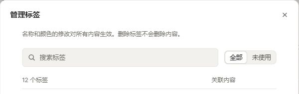
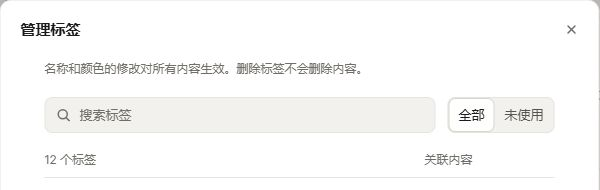

SANI / R9 · 待审批 · 仅原型 · R8 已标记为需要修改
让同组控件遵守同一套尺寸规则
统一外框高度、上下边缘、圆角、文字角色与展开状态。保留 Sani 现有视觉语言；用共享尺寸替代逐个页面的像素补丁。
打开 R9 交互原型 →

尺寸规则
| 使用场景 | 桌面外框 | 窄屏 / 粗指针 |
|---|---|---|
| 紧凑工具栏、创建选项、同组动作 | 32px | 44px |
| 标准表单、管理搜索、同组提交按钮 | 36px | 44px |
| 展开菜单操作行 | 至少 38px | 至少 44px |
| 分段切换器 | 外框跟随所在组；内部按钮高度 = 外框 − 4px，保留上下各 2px 留白 | |
外框圆角 8px，分段内部与菜单行圆角 6px。输入正文与操作标签按既有角色排版；短码、版本、时区和域名保留等宽字体。开关、状态标签、日历网格和主网址输入保留各自形态。
本轮一起修订的范围
验收依据
28 个保存状态 · 20 类成组控件 · 189 次组实例测量。目标档位、组内对齐、分段内边距均通过；axe 0 违规，页面无横向溢出。
浏览器记录包含外框尺寸、组内上下边缘、切换器内边距、页面溢出和 axe 结果，并保存对应截图。检查覆盖 1194px、768px、390px、320px，中英文和明暗主题的代表组合；不是所有组合的笛卡尔积。
详细范围、已验证交互和实施映射见 R9 交接记录。原型为内存演示，刷新恢复。批准的是本页对应的 R9；生产实施与生产回归随后进行。